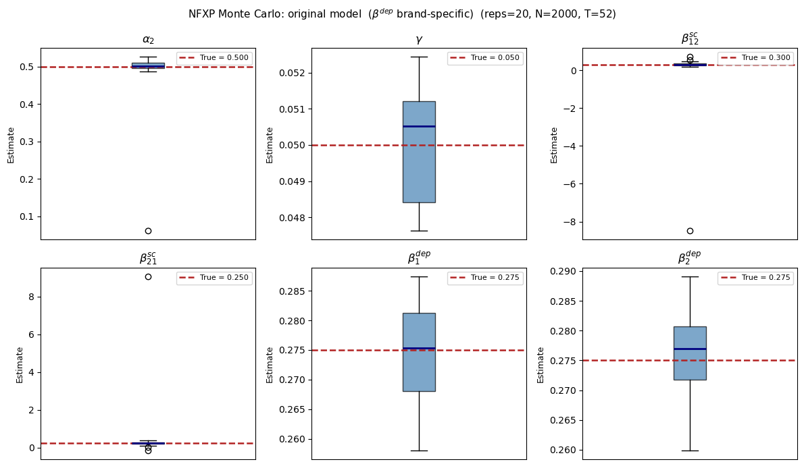
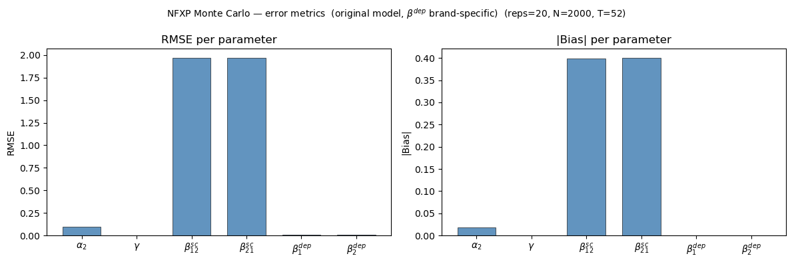

# Standard library and scientific computing imports
import time
import math
from pathlib import Path
import numpy as np
import pandas as pd
from scipy.optimize import minimize
import matplotlib.pyplot as plt
import matplotlib.ticker as mtickerNFXP — Original Dynamic Demand Model
Oliver Ovdal Eiberg Jørgensen & Solveig Røndal-Liniger — Dynamic Programming, Spring 2026
Model
The consumer chooses each period \(t\): \(y_{it} \in \{0, 1, \ldots, J\}\) — either no purchase (\(y=0\)) or brand \(j \in \{1,\ldots,J\}\).
State variable: \(x_{it} = (\ell_{it},\, d_{it},\, e_t)\) where - \(\ell_{it}\): last-purchased brand - \(d_{it}\): time since last purchase - \(e_t\): promotion status (exogenous Markov chain)
Utility (equation 1): \[U_{it} = \begin{cases} \alpha(\ell_{it}) - \beta^{\rm dep}(\ell_{it})\cdot d_{it} & \text{if } y_{it}=0 \\ \alpha(j) - \gamma\cdot p_{it}(j) - \beta^{\rm sc}(\ell_{it},\, j) & \text{if } y_{it}=j \end{cases}\]
- \(\beta^{\rm dep}[\ell] \times d\): inventory depreciation linear in duration, rate is brand-specific
- \(\gamma \cdot p_{it}(j)\): disutility from expenditure
- \(\beta^{\rm sc}(\ell, j)\): brand switching cost
Transition rule: \[ (\ell_{i,t+1},\, d_{i,t+1}) = \begin{cases} (\ell_{it},\, d_{it}+1) & \text{if } y_{it}=0 \\ (j,\, 1) & \text{if } y_{it}=j \end{cases} \]
Estimator: NFXP (Rust 1987) — Nelder-Mead outer loop, VFI inner loop.
1. Import
Simulation
2. Primitives and True Parameters
# ── Model dimensions ──────────────────────────────────────────────────────────
J = 2 # number of brands
T = 52 # periods per consumer
N = 2_000 # consumers per panel
D_MAX = 10 # duration cap: d_idx ∈ {0,...,D_MAX}, paper-d ∈ {1,...,D_MAX+1}
DELTA = 0.95 # discount factor
# ── Price levels ──────────────────────────────────────────────────────────────
BASE_PRICES = np.array([7.0, 10.0]) # regular unit prices
PROMO_DISC = np.array([1.5, 2.0]) # promotion discount
PROMO_ENTRY = 0.18 # P(promotion starts)
PROMO_PERSIST = 0.62 # P(promotion persists)
# ── True structural parameters (DGP) ─────────────────────────────────────────
#
# u(0) = α(ℓ) − β^dep[ℓ] · d
# u(j) = α(j) − γ · p(j) − β^sc(ℓ, j)
#
ALPHA_TRUE = np.array([0.0, 0.50]) # α(1)=0 is the normalization
GAMMA_TRUE = 0.05 # marginal expenditure disutility
BETA_SC_TRUE = np.array([[0.00, 0.30], # β^sc[k,j]: switching cost k→j
[0.25, 0.00]])
BETA_DEP_TRUE = np.array([0.275, 0.275]) # β^dep[ℓ]: brand-specific depreciation rate
# ── Monte Carlo ───────────────────────────────────────────────────────────────
MC_REPS = 20
MC_SEED = 2024
# ── Choice indexing ───────────────────────────────────────────────────────────
# choice c = 0 → no purchase
# choice c = j → buy brand j ∈ {1,...,J}
N_CHOICES = J + 1 # 3 choices: {0, 1, 2}
# ── Parameter vector ──────────────────────────────────────────────────────────
PARAM_NAMES = ["alpha_2", "gamma", "beta_sc_12", "beta_sc_21",
"beta_dep_1", "beta_dep_2"]
THETA_TRUE = np.array([
ALPHA_TRUE[1],
GAMMA_TRUE,
BETA_SC_TRUE[0, 1],
BETA_SC_TRUE[1, 0],
BETA_DEP_TRUE[0],
BETA_DEP_TRUE[1],
])
print("True parameters:")
for n, v in zip(PARAM_NAMES, THETA_TRUE):
print(f" {n:<14} = {v}")
print(f"\nN_CHOICES={N_CHOICES} | BASE_PRICES={BASE_PRICES} | D_MAX={D_MAX}")True parameters:
alpha_2 = 0.5
gamma = 0.05
beta_sc_12 = 0.3
beta_sc_21 = 0.25
beta_dep_1 = 0.275
beta_dep_2 = 0.275
N_CHOICES=3 | BASE_PRICES=[ 7. 10.] | D_MAX=103. Price Process — Hi-Lo (Assumption 2.1)
Promotion status \(e_t \in \{0,1\}^J\) is a binary vector. With \(J=2\) there are \(2^2=4\) possible states. Brand promotions follow independent two-state Markov chains, and the joint transition probability is the product of the marginal probabilities.
# Enumerate all 2^J joint promotion states as binary vectors
promo_states = np.array(
[[(s >> j) & 1 for j in range(J)] for s in range(2 ** J)], dtype=int
)
N_PROMO = len(promo_states)
def make_promo_transition() -> np.ndarray:
# Build joint transition matrix as product of independent brand Markov chains
trans = np.empty((N_PROMO, N_PROMO))
for s, curr in enumerate(promo_states):
prob_on = np.where(curr == 1, PROMO_PERSIST, PROMO_ENTRY)
for sp, nxt in enumerate(promo_states):
trans[s, sp] = np.prod(np.where(nxt == 1, prob_on, 1.0 - prob_on))
return trans
PROMO_TRANS = make_promo_transition()
print("Unit prices by promotion state:")
for s, e in enumerate(promo_states):
p = BASE_PRICES - PROMO_DISC * e
print(f" State {s}: e={tuple(e)} p={p}")Unit prices by promotion state:
State 0: e=(np.int64(0), np.int64(0)) p=[ 7. 10.]
State 1: e=(np.int64(1), np.int64(0)) p=[ 5.5 10. ]
State 2: e=(np.int64(0), np.int64(1)) p=[7. 8.]
State 3: e=(np.int64(1), np.int64(1)) p=[5.5 8. ]4. Utility Function (equation 1)
\[U_{it} = \begin{cases} \alpha(\ell_{it}) - \beta^{\rm dep}[\ell_{it}] \cdot d_{it} & \text{if } y_{it}=0 \\ \alpha(j) - \gamma\cdot p_{it}(j) - \beta^{\rm sc}(\ell_{it},\, j) & \text{if } y_{it}=j \end{cases}\]
- \(\gamma \cdot p_{it}(j)\): disutility from expenditure (linear in price)
- \(\beta^{\rm dep}[\ell] \times d\): inventory depreciation linear in duration, rate is brand-specific
- \(\beta^{\rm sc}(\ell, j)\): brand switching cost
def flow_util(choice, last_brand, duration, e_idx,
alpha, gamma, beta_sc, beta_dep) -> float:
"""
Deterministic period utility.
choice : 0 = no purchase; j ∈ {1,...,J} → buy brand j
last_brand: ℓ ∈ {1,...,J}
duration : paper-d = d_idx + 1 ∈ {1,...,D_MAX+1}
beta_dep : (J,) array — brand-specific depreciation rate
"""
l = last_brand - 1
prices = BASE_PRICES - PROMO_DISC * promo_states[e_idx]
if choice == 0:
# No purchase: inventory depreciates at brand-specific rate
return alpha[l] - beta_dep[l] * duration
j = choice - 1 # brand index (0-indexed)
return alpha[j] - gamma * prices[j] - beta_sc[l, j]5. Inner Loop: Value Function Iteration (VFI)
State space: \((\ell, d, e)\), \(J \times (D_{\max}+1) \times N_e = 2 \times 4 \times 4 = 32\) states.
\(V\) has shape (J, D_MAX+1, N_PROMO).
Transition rules in VFI: - No purchase: \((\ell, d_{\rm idx}) \to (\ell, \min(d_{\rm idx}+1, D_{\rm MAX}))\) - Purchase \(j\): \((\ell, d_{\rm idx}) \to (j, 0)\) (paper-\(d=1\))
def solve_vfi(alpha, gamma, beta_sc, beta_dep,
tol: float = 1e-10, max_iter: int = 2_000) -> np.ndarray:
"""
VFI for the original model (brand-specific β^dep).
V shape: (J, D_MAX+1, N_PROMO).
d_idx ∈ {0,...,D_MAX} corresponds to paper-d = d_idx + 1.
"""
V = np.zeros((J, D_MAX + 1, N_PROMO))
for _ in range(max_iter):
# Expected continuation value (integrate over promotion process)
EV = (V.reshape(J * (D_MAX + 1), N_PROMO) @ PROMO_TRANS.T
).reshape(J, D_MAX + 1, N_PROMO)
V_new = np.empty_like(V)
for l_idx in range(J):
ell = l_idx + 1
for d in range(D_MAX + 1):
d_next = min(d + 1, D_MAX) # d_idx for no purchase
d_dur = d + 1 # paper-d for the utility function
for e in range(N_PROMO):
Q = np.empty(N_CHOICES)
# No purchase: state → (ℓ, d_next, e')
Q[0] = (flow_util(0, ell, d_dur, e, alpha, gamma, beta_sc, beta_dep)
+ DELTA * EV[l_idx, d_next, e])
# Purchase brand j: state → (j, d_idx=0, e') [paper d=1]
for j_idx in range(J):
Q[j_idx + 1] = (
flow_util(j_idx + 1, ell, d_dur, e, alpha, gamma, beta_sc, beta_dep)
+ DELTA * EV[j_idx, 0, e]
)
# Log-sum-exp for the Emax (Gumbel extreme value assumption)
qm = Q.max()
V_new[l_idx, d, e] = qm + np.log(np.exp(Q - qm).sum())
if np.max(np.abs(V_new - V)) < tol:
return V_new
V = V_new
return V6. Conditional Choice Probabilities (CCPs)
\[P(j \mid s;\theta) = \frac{\exp(Q_j)}{\sum_{k}\exp(Q_k)}, \quad Q_j = u(j, s) + \delta\cdot EV(\text{next state})\]
P shape: (J, D_MAX+1, N_PROMO, N_CHOICES).
def compute_ccps(V, alpha, gamma, beta_sc, beta_dep) -> np.ndarray:
"""
Compute CCPs from solved value function V.
P shape: (J, D_MAX+1, N_PROMO, N_CHOICES).
"""
# Expected continuation value integrated over next promotion state
EV = (V.reshape(J * (D_MAX + 1), N_PROMO) @ PROMO_TRANS.T
).reshape(J, D_MAX + 1, N_PROMO)
P = np.empty((J, D_MAX + 1, N_PROMO, N_CHOICES))
for l_idx in range(J):
ell = l_idx + 1
for d in range(D_MAX + 1):
d_next = min(d + 1, D_MAX)
d_dur = d + 1
for e in range(N_PROMO):
Q = np.empty(N_CHOICES)
Q[0] = (flow_util(0, ell, d_dur, e, alpha, gamma, beta_sc, beta_dep)
+ DELTA * EV[l_idx, d_next, e])
for j_idx in range(J):
Q[j_idx + 1] = (
flow_util(j_idx + 1, ell, d_dur, e, alpha, gamma, beta_sc, beta_dep)
+ DELTA * EV[j_idx, 0, e]
)
# Softmax to get choice probabilities
w = np.exp(Q - Q.max())
P[l_idx, d, e, :] = w / w.sum()
return P7. Data Simulation
simulate_panel simulates a consumer panel from the model’s CCPs and returns: - Y ∈ {0,…,J}: brand choice (0 = no purchase) - L: last-purchased brand (state variable) - D: duration since last purchase, d_idx ∈ {0,…,D_MAX} - E_IDX: promotion status
def _sample_rows(rng, row_probs: np.ndarray) -> np.ndarray:
"""Vectorized categorical draw: one observation per row of row_probs."""
u = rng.random(len(row_probs))
cumsum = np.cumsum(row_probs, axis=1)
return (u[:, None] > cumsum).sum(axis=1)
def simulate_panel(P_true: np.ndarray,
n_consumers: int = N, n_periods: int = T,
seed=None) -> dict:
"""
Simulate consumer panel from CCPs.
P_true shape: (J, D_MAX+1, N_PROMO, N_CHOICES).
Returns dict: Y, L, D, E_IDX — all (n_consumers, n_periods).
"""
rng = np.random.default_rng(seed)
# Pre-allocate arrays for the full panel
Y = np.zeros((n_consumers, n_periods), dtype=int)
L = np.zeros((n_consumers, n_periods), dtype=int)
D = np.zeros((n_consumers, n_periods), dtype=int)
E_IDX = np.zeros((n_consumers, n_periods), dtype=int)
# Random initial states
ell = rng.integers(1, J + 1, size=n_consumers)
dur = rng.integers(0, D_MAX + 1, size=n_consumers)
e_idx = rng.integers(0, N_PROMO, size=n_consumers)
for t in range(n_periods):
# Record current state
L[:, t] = ell
D[:, t] = dur
E_IDX[:, t] = e_idx
# CCP lookup: state (ℓ-1, min(d,D_MAX), e)
probs = P_true[ell - 1, np.minimum(dur, D_MAX), e_idx, :]
y = _sample_rows(rng, probs)
Y[:, t] = y
# Update state variables (transition rule)
bought = y > 0
ell = np.where(bought, y, ell) # new brand if purchased
dur = np.where(bought, 0, np.minimum(dur + 1, D_MAX))
e_idx = _sample_rows(rng, PROMO_TRANS[e_idx])
return {"Y": Y, "L": L, "D": D, "E_IDX": E_IDX}8. Log-Likelihood and NFXP
Log-likelihood: \[\ell(\theta) = \sum_{i,t} \log P(y_{it} \mid \ell_{it}, d_{it}, e_{it}; \theta)\]
NFXP (Rust 1987): outer Nelder-Mead minimizes \(-\ell(\theta)\); inner VFI solves the Bellman equation at each candidate \(\theta\).
Parameter vector: \[\theta = [\alpha_2,\; \gamma,\; \beta^{sc}_{12},\; \beta^{sc}_{21},\; \beta^{dep}_1,\; \beta^{dep}_2]\]
def log_likelihood(data: dict, P: np.ndarray) -> float:
"""Summed log-likelihood over all (i,t) observations."""
Y, L, D, E = data["Y"], data["L"], data["D"], data["E_IDX"]
probs = P[L - 1, D, E, Y]
return float(np.sum(np.log(np.maximum(probs, 1e-300))))
def unpack(theta: np.ndarray):
"""Unpack theta = [alpha_2, gamma, beta_sc_12, beta_sc_21, beta_dep_1, beta_dep_2]."""
alpha = np.array([0.0, theta[0]])
gamma = float(theta[1])
beta_sc = np.array([[0.0, theta[2]], [theta[3], 0.0]])
beta_dep = np.array([theta[4], theta[5]]) # (J,) brand-specific rates
return alpha, gamma, beta_sc, beta_dep
def nfxp_objective(theta: np.ndarray, data: dict) -> float:
# Solve VFI, compute CCPs, and return negative log-likelihood
alpha, gamma, beta_sc, beta_dep = unpack(theta)
V = solve_vfi(alpha, gamma, beta_sc, beta_dep)
P = compute_ccps(V, alpha, gamma, beta_sc, beta_dep)
return -log_likelihood(data, P)
def estimate_nfxp(data: dict, theta0: np.ndarray = None, verbose: bool = False):
"""Estimate the model with NFXP (Nelder-Mead)."""
if theta0 is None:
theta0 = np.array([0.1, 0.03, 0.3, 0.3, 0.2, 0.2])
return minimize(
fun=nfxp_objective,
x0=theta0,
args=(data,),
method="Nelder-Mead",
options={"maxiter": 10_000, "xatol": 1e-5, "fatol": 1e-5,
"disp": verbose, "adaptive": True},
)9. Pilot — Single Panel
Verify that VFI converges, the simulation looks reasonable, and that NFXP recovers the true parameters from a single panel.
print("Step 1: Solving DP at true parameters...")
a0, g0, sc0, dep0 = unpack(THETA_TRUE)
V_true = solve_vfi(a0, g0, sc0, dep0)
P_true = compute_ccps(V_true, a0, g0, sc0, dep0)
print(" VFI converged.")
print(f"\nStep 2: Simulating panel (N={N}, T={T})...")
data_pilot = simulate_panel(P_true, seed=42)
Y = data_pilot["Y"]
print(f" No purchase: {(Y == 0).mean():.1%}")
for j in range(1, J + 1):
print(f" Brand {j}: {(Y == j).mean():.1%}")
print("\nStep 3: Estimating with NFXP...")
# Perturb true parameters slightly as starting point
theta0_pilot = THETA_TRUE + np.array([0.05, 0.005, 0.05, 0.05, 0.02, 0.02])
t0 = time.perf_counter()
res_pilot = estimate_nfxp(data_pilot, theta0=theta0_pilot)
t1 = time.perf_counter() - t0
print(f" Time: {t1:.1f}s | Converged: {res_pilot.success} | Iterations: {res_pilot.nit}")
print("\n" + "─" * 55)
df_pilot = pd.DataFrame({
"Parameter": PARAM_NAMES,
"True": THETA_TRUE,
"NFXP": res_pilot.x,
"Bias": res_pilot.x - THETA_TRUE,
})
print(df_pilot.to_string(index=False, float_format=lambda x: f"{x:+.4f}"))Step 1: Solving DP at true parameters...
VFI converged.
Step 2: Simulating panel (N=2000, T=52)...
No purchase: 34.7%
Brand 1: 21.0%
Brand 2: 44.3%
Step 3: Estimating with NFXP...--------------------------------------------------------------------------- KeyboardInterrupt Traceback (most recent call last) Cell In[9], line 18 16 theta0_pilot = THETA_TRUE + np.array([0.05, 0.005, 0.05, 0.05, 0.02, 0.02]) 17 t0 = time.perf_counter() ---> 18 res_pilot = estimate_nfxp(data_pilot, theta0=theta0_pilot) 19 t1 = time.perf_counter() - t0 20 print(f" Time: {t1:.1f}s | Converged: {res_pilot.success} | Iterations: {res_pilot.nit}") Cell In[8], line 29, in estimate_nfxp(data, theta0, verbose) 27 if theta0 is None: 28 theta0 = np.array([0.1, 0.03, 0.3, 0.3, 0.2, 0.2]) ---> 29 return minimize( 30 fun=nfxp_objective, 31 x0=theta0, 32 args=(data,), 33 method="Nelder-Mead", 34 options={"maxiter": 10_000, "xatol": 1e-5, "fatol": 1e-5, 35 "disp": verbose, "adaptive": True}, 36 ) File ~/programming/github/repositories/current_courses/dp_ucph_oe/.venv/lib/python3.11/site-packages/scipy/optimize/_minimize.py:772, in minimize(fun, x0, args, method, jac, hess, hessp, bounds, constraints, tol, callback, options) 769 callback = _wrap_callback(callback, meth) 771 if meth == 'nelder-mead': --> 772 res = _minimize_neldermead(fun, x0, args, callback, bounds=bounds, 773 **options) 774 elif meth == 'powell': 775 res = _minimize_powell(fun, x0, args, callback, bounds, **options) File ~/programming/github/repositories/current_courses/dp_ucph_oe/.venv/lib/python3.11/site-packages/scipy/optimize/_optimize.py:876, in _minimize_neldermead(func, x0, args, callback, maxiter, maxfev, disp, return_all, initial_simplex, xatol, fatol, adaptive, bounds, **unknown_options) 874 if bounds is not None: 875 xr = np.clip(xr, lower_bound, upper_bound) --> 876 fxr = func(xr) 877 doshrink = 0 879 if fxr < fsim[0]: File ~/programming/github/repositories/current_courses/dp_ucph_oe/.venv/lib/python3.11/site-packages/scipy/optimize/_optimize.py:560, in _wrap_scalar_function_maxfun_validation.<locals>.function_wrapper(x, *wrapper_args) 558 ncalls[0] += 1 559 # A copy of x is sent to the user function (gh13740) --> 560 fx = function(np.copy(x), *(wrapper_args + args)) 561 # Ideally, we'd like to a have a true scalar returned from f(x). For 562 # backwards-compatibility, also allow np.array([1.3]), 563 # np.array([[1.3]]) etc. 564 if not np.isscalar(fx): Cell In[8], line 22, in nfxp_objective(theta, data) 20 V = solve_vfi(alpha, gamma, beta_sc, beta_dep) 21 P = compute_ccps(V, alpha, gamma, beta_sc, beta_dep) ---> 22 return -log_likelihood(data, P) Cell In[8], line 5, in log_likelihood(data, P) 3 Y, L, D, E = data["Y"], data["L"], data["D"], data["E_IDX"] 4 probs = P[L - 1, D, E, Y] ----> 5 return float(np.sum(np.log(np.maximum(probs, 1e-300)))) KeyboardInterrupt:
10. Monte Carlo
For each replication: 1. Simulate a new panel from the DGP 2. Estimate the model with NFXP 3. Record estimates, bias, and RMSE
Expected result: low RMSE and bias close to zero for all 6 parameters.
def run_monte_carlo(n_reps: int = MC_REPS, seed: int = MC_SEED):
rng_master = np.random.default_rng(seed)
rep_seeds = rng_master.integers(0, 1_000_000, size=n_reps)
# Solve DP once at true parameters; all replications use the same DGP CCPs
a_t, g_t, sc_t, dep_t = unpack(THETA_TRUE)
V_t = solve_vfi(a_t, g_t, sc_t, dep_t)
P_t = compute_ccps(V_t, a_t, g_t, sc_t, dep_t)
print(f"MC | J={J}, T={T}, N={N}, D_MAX={D_MAX}, reps={n_reps}")
print(f"DGP: β^dep={BETA_DEP_TRUE}\n")
rows = []
for rep in range(1, n_reps + 1):
# Simulate a new panel for this replication
data = simulate_panel(P_t, n_consumers=N, n_periods=T,
seed=int(rep_seeds[rep - 1]))
# Random perturbation around true parameters as starting point
rng_s = np.random.default_rng(int(rep_seeds[rep - 1]) + 999)
pert = rng_s.normal(0, 0.05, size=6)
theta0 = THETA_TRUE + pert
t0 = time.perf_counter()
r = estimate_nfxp(data, theta0=theta0)
t1 = time.perf_counter() - t0
print(f" Rep {rep:>3}/{n_reps} conv={r.success} ({t1:>4.0f}s)")
for k, name in enumerate(PARAM_NAMES):
rows.append({
"rep": rep,
"param": name,
"true": THETA_TRUE[k],
"estimate": r.x[k],
"bias": r.x[k] - THETA_TRUE[k],
"sq_error": (r.x[k] - THETA_TRUE[k]) ** 2,
"converged": int(r.success),
})
# Aggregate bias, std, and RMSE across replications
df = pd.DataFrame(rows)
summary = pd.DataFrame([{
"param": name,
"true": THETA_TRUE[i],
"mean_est": df[df["param"] == name]["estimate"].mean(),
"bias": df[df["param"] == name]["bias"].mean(),
"std": df[df["param"] == name]["estimate"].std(ddof=1),
"rmse": np.sqrt(df[df["param"] == name]["sq_error"].mean()),
"conv_rate": df[df["param"] == name]["converged"].mean(),
} for i, name in enumerate(PARAM_NAMES)])
return df, summary# Run Monte Carlo and collect results and summary statistics
results, summary = run_monte_carlo()MC | J=2, T=52, N=2000, D_MAX=10, reps=20
DGP: β^dep=[0.275 0.275]
Rep 1/20 conv=True ( 113s)
Rep 2/20 conv=True ( 116s)
Rep 3/20 conv=True ( 91s)
Rep 4/20 conv=True ( 109s)
Rep 5/20 conv=True ( 128s)
Rep 6/20 conv=True ( 179s)
Rep 7/20 conv=True ( 126s)
Rep 8/20 conv=True ( 154s)
Rep 9/20 conv=True ( 136s)
Rep 10/20 conv=True ( 90s)
Rep 11/20 conv=True ( 114s)
Rep 12/20 conv=True ( 135s)
Rep 13/20 conv=True ( 104s)
Rep 14/20 conv=True ( 114s)
Rep 15/20 conv=True ( 135s)
Rep 16/20 conv=True ( 112s)
Rep 17/20 conv=True ( 111s)
Rep 18/20 conv=True ( 129s)
Rep 19/20 conv=True ( 102s)
Rep 20/20 conv=True ( 123s)11. Results
print("=" * 65)
print("NFXP Monte Carlo — original model (brand-specific β^dep)")
print(f"J={J}, T={T}, N={N}, D_MAX={D_MAX}, reps={MC_REPS}")
print("=" * 65)
print(summary.to_string(index=False, float_format=lambda x: f"{x:.4f}"))
# Save results to CSV for reporting
results.to_csv("nfxp_mc_results_original.csv", index=False)
summary.to_csv("nfxp_mc_summary_original.csv", index=False)
print("\nSaved: nfxp_mc_results_original.csv and nfxp_mc_summary_original.csv")=================================================================
NFXP Monte Carlo — original model (brand-specific β^dep)
J=2, T=52, N=2000, D_MAX=10, reps=20
=================================================================
param true mean_est bias std rmse conv_rate
alpha_2 0.5000 0.4811 -0.0189 0.0993 0.0986 1.0000
gamma 0.0500 0.0500 0.0000 0.0015 0.0015 1.0000
beta_sc_12 0.3000 -0.0981 -0.3981 1.9768 1.9675 1.0000
beta_sc_21 0.2500 0.6509 0.4009 1.9803 1.9714 1.0000
beta_dep_1 0.2750 0.2744 -0.0006 0.0085 0.0083 1.0000
beta_dep_2 0.2750 0.2758 0.0008 0.0072 0.0071 1.0000
Saved: nfxp_mc_results_original.csv and nfxp_mc_summary_original.csv12. Visualization
Boxplots for all 6 parameters over Monte Carlo replications compared to the true values.
# LaTeX labels for each parameter (used in plots)
latex_lbl = {
"alpha_2": r"$\alpha_2$",
"gamma": r"$\gamma$",
"beta_sc_12": r"$\beta^{sc}_{12}$",
"beta_sc_21": r"$\beta^{sc}_{21}$",
"beta_dep_1": r"$\beta^{dep}_1$",
"beta_dep_2": r"$\beta^{dep}_2$",
}
fig, axes = plt.subplots(2, 3, figsize=(12, 7))
axes = axes.flatten()
for ax, (i, name) in zip(axes, enumerate(PARAM_NAMES)):
est = results[results["param"] == name]["estimate"].to_numpy()
true_v = THETA_TRUE[i]
# Box shows distribution of MC estimates; dashed line marks true value
ax.boxplot(est, vert=True, patch_artist=True,
boxprops=dict(facecolor="steelblue", alpha=0.7),
medianprops=dict(color="navy", linewidth=2))
ax.axhline(true_v, color="firebrick", lw=1.8, ls="--",
label=f"True = {true_v:.3f}")
ax.set_title(latex_lbl.get(name, name), fontsize=12)
ax.set_ylabel("Estimate", fontsize=9)
ax.legend(fontsize=8)
ax.xaxis.set_major_locator(mticker.NullLocator())
fig.suptitle(
r"NFXP Monte Carlo: original model ($\beta^{dep}$ brand-specific)"
f" (reps={MC_REPS}, N={N}, T={T})",
fontsize=11,
)
plt.tight_layout()
plt.savefig("nfxp_mc_boxplots_original.pdf", bbox_inches="tight")
plt.show()
# Bias and RMSE bar chart — summarizes estimation accuracy across parameters
labels = [latex_lbl.get(n, n) for n in PARAM_NAMES]
bias_abs = [abs(summary.loc[summary["param"] == n, "bias"].values[0]) for n in PARAM_NAMES]
rmse_v = [summary.loc[summary["param"] == n, "rmse"].values[0] for n in PARAM_NAMES]
x = np.arange(len(PARAM_NAMES))
w = 0.35
fig, axes = plt.subplots(1, 2, figsize=(12, 4))
for ax, vals, ylabel, title in [
(axes[0], rmse_v, "RMSE", "RMSE per parameter"),
(axes[1], bias_abs, "|Bias|", "|Bias| per parameter"),
]:
ax.bar(x, vals, 2 * w, color="steelblue", alpha=0.85, edgecolor="black", lw=0.5)
ax.set_xticks(x)
ax.set_xticklabels(labels, fontsize=10)
ax.set_ylabel(ylabel)
ax.set_title(title)
ax.axhline(0, color="black", lw=0.5)
fig.suptitle(
r"NFXP Monte Carlo — error metrics (original model, $\beta^{dep}$ brand-specific)"
f" (reps={MC_REPS}, N={N}, T={T})",
fontsize=10,
)
plt.tight_layout()
plt.savefig("nfxp_mc_bias_rmse_original.pdf", bbox_inches="tight")
plt.show()
Emipirical Application
SCANNER_DATA = "/Users/olivereiberg/Documents/Economics/MA/2_Semester/Data/panel_with_state.csv"
PRICE_PROMO_DATA = "/Users/olivereiberg/Documents/Economics/MA/2_Semester/Data/Price_Promo.xlsx"
NETTO_DF_EXPORT_PATH = Path("/Users/olivereiberg/Documents/Economics/MA/2_Semester/Data/netto_df.csv")
EMPIRICAL_BRANDS = [1, 2]
EMPIRICAL_PRICE_COLUMNS = {
1: "Brand_1_price",
2: "Brand_2_price",
}
# Load scanner panel
netto_df = pd.read_csv(SCANNER_DATA)
# Match current QMD setup
netto_df = netto_df[netto_df["week_num"] != 53].copy()
netto_df["Brand"] = netto_df["Brand"].astype(str)
netto_df["Price"] = pd.to_numeric(netto_df["Price"], errors="coerce").round(1)
netto_df["Customer_ID"] = pd.to_numeric(netto_df["Customer_ID"], errors="coerce").astype("Int64")
netto_df["week_num"] = pd.to_numeric(netto_df["week_num"], errors="coerce").astype("Int64")
netto_df["brand_id"] = pd.to_numeric(netto_df["Brand"], errors="coerce").fillna(0).astype(int)
# Load third Excel sheet with RRP/discount/promo data
price_promo_workbook = pd.ExcelFile(PRICE_PROMO_DATA)
price_promo_sheet_name = price_promo_workbook.sheet_names[2]
price_promo_df = pd.read_excel(price_promo_workbook, sheet_name=price_promo_sheet_name)
price_promo_required_columns = [
"WeekNum",
"RRP_Brand_1",
"Discount_Brand_1",
"Promo_Brand_1",
"RRP_Brand_2",
"Discount_Brand_2",
"Promo_Brand_2",
]
price_promo_df = price_promo_df[price_promo_required_columns].copy()
for column in price_promo_required_columns:
price_promo_df[column] = pd.to_numeric(price_promo_df[column], errors="coerce")
price_promo_df = price_promo_df.dropna(subset=["WeekNum"]).copy()
price_promo_df["WeekNum"] = price_promo_df["WeekNum"].astype(int)
# Construct binary offered prices: RRP if not promoted, brand-specific
# mean discount price if promoted. This keeps the price process binary
# while preserving brand-specific sale-price levels.
EMPIRICAL_MEAN_DISCOUNT_PRICE = {}
for brand in EMPIRICAL_BRANDS:
promo_column = f"Promo_Brand_{brand}"
discount_column = f"Discount_Brand_{brand}"
rrp_column = f"RRP_Brand_{brand}"
price_column = EMPIRICAL_PRICE_COLUMNS[brand]
mean_discount_column = f"Mean_Discount_Brand_{brand}"
price_promo_df[promo_column] = price_promo_df[promo_column].fillna(0).astype(int)
promo_discount_mask = (price_promo_df[promo_column] == 1) & price_promo_df[discount_column].notna()
mean_discount_price = price_promo_df.loc[promo_discount_mask, discount_column].mean()
if not np.isfinite(mean_discount_price):
mean_discount_price = price_promo_df[discount_column].mean()
if not np.isfinite(mean_discount_price):
mean_discount_price = price_promo_df[rrp_column].median()
EMPIRICAL_MEAN_DISCOUNT_PRICE[brand] = mean_discount_price
price_promo_df[mean_discount_column] = mean_discount_price
price_promo_df[price_column] = np.where(
price_promo_df[promo_column] == 1,
mean_discount_price,
price_promo_df[rrp_column],
)
empirical_binary_price_summary = pd.DataFrame(
[
{
"Brand": brand,
"RRP median": price_promo_df[f"RRP_Brand_{brand}"].median(),
"Mean sale price": EMPIRICAL_MEAN_DISCOUNT_PRICE[brand],
"Promo weeks": int(price_promo_df[f"Promo_Brand_{brand}"].sum()),
}
for brand in EMPIRICAL_BRANDS
]
)
print("Binary empirical price support:")
print(empirical_binary_price_summary.to_string(index=False, float_format=lambda x: f"{x:.3f}"))
price_promo_merge_columns = [
"WeekNum",
"RRP_Brand_1",
"Discount_Brand_1",
"Mean_Discount_Brand_1",
"Promo_Brand_1",
"Brand_1_price",
"RRP_Brand_2",
"Discount_Brand_2",
"Mean_Discount_Brand_2",
"Promo_Brand_2",
"Brand_2_price",
]
# Join weekly price/promo data onto scanner panel
netto_df = netto_df.merge(
price_promo_df[price_promo_merge_columns],
left_on="week_num",
right_on="WeekNum",
how="left",
validate="many_to_one",
)
# Keep only rows with both alternative prices available
netto_df = netto_df.loc[
netto_df["Brand_1_price"].notna() & netto_df["Brand_2_price"].notna()
].copy()
netto_df.head()
Empirical Model Setup
# Empirical NFXP setup ---------------------------------------------------------
# This section uses the netto_df constructed above. The state is the original
# model state (last brand, duration since last purchase, promotion state), and
# the likelihood is aggregated by state-choice counts for speed.
EMPIRICAL_D_MAX = D_MAX
EMPIRICAL_DELTA = DELTA
EMPIRICAL_TRANSITION_SMOOTHING = 1e-3
EMPIRICAL_VFI_TOL = 3e-8
EMPIRICAL_VFI_MAXITER = 1_000
EMPIRICAL_OPTIMIZER_MAXITER = 80
EMPIRICAL_PARAM_NAMES = ["alpha_0", *PARAM_NAMES]
EMPIRICAL_PARAM_BOUNDS = [
(-10.0, 10.0), # alpha_0: no-purchase intercept
(-5.0, 5.0), # alpha_2
(1e-5, 1.0), # gamma > 0
(0.0, 5.0), # beta_sc_12 >= 0
(0.0, 5.0), # beta_sc_21 >= 0
(0.0, 5.0), # beta_dep_1 >= 0
(0.0, 5.0), # beta_dep_2 >= 0
]
EMPIRICAL_THETA_STARTS = [
np.array([2.00, 0.50, 0.05, 0.30, 0.25, 0.20, 0.20]),
np.array([1.50, 1.00, 0.03, 0.10, 0.10, 0.05, 0.05]),
np.array([2.50, 0.00, 0.08, 0.50, 0.50, 0.20, 0.20]),
]
def unpack_empirical(theta: np.ndarray):
"""Unpack empirical theta with a no-purchase intercept alpha_0."""
alpha_0 = float(theta[0])
alpha, gamma, beta_sc, beta_dep = unpack(theta[1:])
return alpha_0, alpha, gamma, beta_sc, beta_dep
def empirical_promo_state_index(frame: pd.DataFrame) -> np.ndarray:
"""Map Promo_Brand_1/2 columns to the promo_states index used above."""
promo_columns = [f"Promo_Brand_{brand}" for brand in EMPIRICAL_BRANDS]
promo_matrix = frame[promo_columns].fillna(0).astype(int).to_numpy()
return promo_matrix @ (2 ** np.arange(J))
def make_empirical_weekly_state_table(data: pd.DataFrame) -> pd.DataFrame:
weekly_columns = [
"week_num",
"Brand_1_price",
"Brand_2_price",
"Promo_Brand_1",
"Promo_Brand_2",
]
missing_columns = [column for column in weekly_columns if column not in data.columns]
if missing_columns:
raise ValueError(
"netto_df is missing required empirical NFXP columns: "
+ ", ".join(missing_columns)
)
weekly = (
data[weekly_columns]
.dropna()
.drop_duplicates()
.sort_values("week_num")
.reset_index(drop=True)
)
if weekly["week_num"].duplicated().any():
duplicated_weeks = weekly.loc[weekly["week_num"].duplicated(), "week_num"].tolist()
raise ValueError(f"Conflicting weekly price/promo rows for weeks: {duplicated_weeks}")
weekly["promo_idx"] = empirical_promo_state_index(weekly)
return weekly
def estimate_empirical_promo_transition(
weekly_state: pd.DataFrame,
smoothing: float = EMPIRICAL_TRANSITION_SMOOTHING,
) -> np.ndarray:
"""Estimate the Markov transition matrix of weekly promotion states."""
promo_idx = weekly_state["promo_idx"].to_numpy(dtype=int)
transition_counts = np.full((N_PROMO, N_PROMO), smoothing, dtype=float)
np.add.at(transition_counts, (promo_idx[:-1], promo_idx[1:]), 1.0)
return transition_counts / transition_counts.sum(axis=1, keepdims=True)
def make_empirical_price_by_promo(weekly_state: pd.DataFrame) -> np.ndarray:
"""Median offered prices by joint promotion state, with own-promo fallbacks."""
price_by_promo = np.full((N_PROMO, J), np.nan)
for state_idx in range(N_PROMO):
state_rows = weekly_state.loc[weekly_state["promo_idx"] == state_idx]
if len(state_rows) == 0:
continue
for brand_idx, brand in enumerate(EMPIRICAL_BRANDS):
price_by_promo[state_idx, brand_idx] = state_rows[
EMPIRICAL_PRICE_COLUMNS[brand]
].median()
for state_idx, promo_vector in enumerate(promo_states):
for brand_idx, brand in enumerate(EMPIRICAL_BRANDS):
if np.isfinite(price_by_promo[state_idx, brand_idx]):
continue
price_column = EMPIRICAL_PRICE_COLUMNS[brand]
promo_column = f"Promo_Brand_{brand}"
fallback = weekly_state.loc[
weekly_state[promo_column].astype(int) == int(promo_vector[brand_idx]),
price_column,
].median()
if not np.isfinite(fallback):
fallback = weekly_state[price_column].median()
price_by_promo[state_idx, brand_idx] = fallback
return price_by_promo
empirical_weekly_state = make_empirical_weekly_state_table(netto_df)
EMPIRICAL_PROMO_TRANS = estimate_empirical_promo_transition(empirical_weekly_state)
EMPIRICAL_PRICE_BY_PROMO = make_empirical_price_by_promo(empirical_weekly_state)
promo_state_labels = [f"e={tuple(int(v) for v in row)}" for row in promo_states]
empirical_price_by_state_table = pd.DataFrame(
EMPIRICAL_PRICE_BY_PROMO,
index=promo_state_labels,
columns=["Brand 1 price", "Brand 2 price"],
)
empirical_promo_transition_table = pd.DataFrame(
EMPIRICAL_PROMO_TRANS,
index=promo_state_labels,
columns=promo_state_labels,
)
print("Empirical median prices by promotion state:")
print(empirical_price_by_state_table.to_string(float_format=lambda x: f"{x:.3f}"))
print("\nEstimated weekly promotion transition matrix:")
print(empirical_promo_transition_table.to_string(float_format=lambda x: f"{x:.3f}"))Empirical median prices by promotion state:
Brand 1 price Brand 2 price
e=(0, 0) 24.950 11.950
e=(1, 0) 10.000 11.950
e=(0, 1) 24.950 10.000
e=(1, 1) 8.554 11.950
Estimated weekly promotion transition matrix:
e=(0, 0) e=(1, 0) e=(0, 1) e=(1, 1)
e=(0, 0) 0.722 0.167 0.083 0.028
e=(1, 0) 0.666 0.222 0.111 0.000
e=(0, 1) 0.600 0.200 0.200 0.000
e=(1, 1) 0.997 0.001 0.001 0.001def prepare_empirical_nfxp_panel(
data: pd.DataFrame,
d_max: int = EMPIRICAL_D_MAX,
):
"""Reconstruct the original model's start-of-period states from netto_df."""
required_columns = [
"Customer_ID",
"week_num",
"brand_id",
"Promo_Brand_1",
"Promo_Brand_2",
"Brand_1_price",
"Brand_2_price",
]
missing_columns = [column for column in required_columns if column not in data.columns]
if missing_columns:
raise ValueError(
"netto_df is missing required empirical NFXP columns: "
+ ", ".join(missing_columns)
)
panel = data.sort_values(["Customer_ID", "week_num"]).copy()
panel["choice"] = panel["brand_id"].where(
panel["brand_id"].isin(EMPIRICAL_BRANDS),
0,
).astype(int)
panel["purchase_brand"] = panel["choice"].where(panel["choice"] > 0)
panel["purchase_week"] = panel["week_num"].where(panel["choice"] > 0)
household_groups = panel.groupby("Customer_ID", sort=False)
panel["last_purchase_brand_including_current"] = household_groups["purchase_brand"].ffill()
panel["last_purchase_week_including_current"] = household_groups["purchase_week"].ffill()
panel["pre_last_brand"] = household_groups[
"last_purchase_brand_including_current"
].shift(1)
panel["pre_last_purchase_week"] = household_groups[
"last_purchase_week_including_current"
].shift(1)
panel["pre_duration_weeks"] = panel["week_num"] - panel["pre_last_purchase_week"]
usable = panel.loc[
panel["pre_last_brand"].isin(EMPIRICAL_BRANDS)
& panel["pre_duration_weeks"].notna()
& panel["Promo_Brand_1"].notna()
& panel["Promo_Brand_2"].notna()
].copy()
usable["Y"] = usable["choice"].astype(int)
usable["L"] = usable["pre_last_brand"].astype(int)
# In the simulated model, D=0 corresponds to paper duration d=1.
usable["D"] = np.clip(
usable["pre_duration_weeks"].to_numpy(dtype=float) - 1.0,
0,
d_max,
).astype(int)
usable["E_IDX"] = empirical_promo_state_index(usable)
counts = np.zeros((J, d_max + 1, N_PROMO, N_CHOICES), dtype=float)
np.add.at(
counts,
(
usable["L"].to_numpy(dtype=int) - 1,
usable["D"].to_numpy(dtype=int),
usable["E_IDX"].to_numpy(dtype=int),
usable["Y"].to_numpy(dtype=int),
),
1.0,
)
data_dict = {
"Y": usable["Y"].to_numpy(dtype=int),
"L": usable["L"].to_numpy(dtype=int),
"D": usable["D"].to_numpy(dtype=int),
"E_IDX": usable["E_IDX"].to_numpy(dtype=int),
}
return usable, data_dict, counts
empirical_panel, empirical_data, empirical_counts = prepare_empirical_nfxp_panel(netto_df)
empirical_n_obs = int(empirical_counts.sum())
empirical_sample_summary = pd.DataFrame(
{
"Statistic": [
"Households in netto_df",
"Weeks in netto_df",
"Rows in netto_df",
"Usable NFXP observations",
"Rows before first observed purchase",
"No-purchase choices",
"Brand 1 choices",
"Brand 2 choices",
"Duration cap",
"Share duration-capped",
],
"Value": [
f"{netto_df['Customer_ID'].nunique():,}",
f"{netto_df['week_num'].nunique():,}",
f"{len(netto_df):,}",
f"{empirical_n_obs:,}",
f"{len(netto_df) - empirical_n_obs:,}",
f"{(empirical_panel['Y'] == 0).sum():,}",
f"{(empirical_panel['Y'] == 1).sum():,}",
f"{(empirical_panel['Y'] == 2).sum():,}",
EMPIRICAL_D_MAX,
f"{(empirical_panel['D'] == EMPIRICAL_D_MAX).mean():.1%}",
],
}
)
print(empirical_sample_summary.to_string(index=False)) Statistic Value
Households in netto_df 42,816
Weeks in netto_df 52
Rows in netto_df 2,226,432
Usable NFXP observations 1,697,631
Rows before first observed purchase 528,801
No-purchase choices 1,439,420
Brand 1 choices 57,203
Brand 2 choices 201,008
Duration cap 10
Share duration-capped 17.0%def solve_empirical_vfi(
alpha_0,
alpha,
gamma,
beta_sc,
beta_dep,
promo_transition: np.ndarray = EMPIRICAL_PROMO_TRANS,
price_by_promo: np.ndarray = EMPIRICAL_PRICE_BY_PROMO,
tol: float = EMPIRICAL_VFI_TOL,
max_iter: int = EMPIRICAL_VFI_MAXITER,
return_info: bool = False,
):
"""Inner loop for the empirical original model."""
V = np.zeros((J, EMPIRICAL_D_MAX + 1, N_PROMO))
last_diff = np.inf
for iteration in range(1, max_iter + 1):
EV = (
V.reshape(J * (EMPIRICAL_D_MAX + 1), N_PROMO) @ promo_transition.T
).reshape(J, EMPIRICAL_D_MAX + 1, N_PROMO)
V_new = np.empty_like(V)
for last_idx in range(J):
for duration_idx in range(EMPIRICAL_D_MAX + 1):
next_duration = min(duration_idx + 1, EMPIRICAL_D_MAX)
paper_duration = duration_idx + 1
for promo_idx in range(N_PROMO):
Q = np.empty(N_CHOICES)
Q[0] = (
alpha_0
+ alpha[last_idx]
- beta_dep[last_idx] * paper_duration
+ EMPIRICAL_DELTA * EV[last_idx, next_duration, promo_idx]
)
for brand_idx in range(J):
Q[brand_idx + 1] = (
alpha[brand_idx]
- gamma * price_by_promo[promo_idx, brand_idx]
- beta_sc[last_idx, brand_idx]
+ EMPIRICAL_DELTA * EV[brand_idx, 0, promo_idx]
)
q_max = Q.max()
V_new[last_idx, duration_idx, promo_idx] = q_max + np.log(
np.exp(Q - q_max).sum()
)
last_diff = float(np.max(np.abs(V_new - V)))
if last_diff < tol:
if return_info:
return V_new, {
"converged": True,
"iterations": iteration,
"sup_norm": last_diff,
}
return V_new
V = V_new
if return_info:
return V, {
"converged": False,
"iterations": max_iter,
"sup_norm": last_diff,
}
return V
def compute_empirical_ccps(
V,
alpha_0,
alpha,
gamma,
beta_sc,
beta_dep,
promo_transition: np.ndarray = EMPIRICAL_PROMO_TRANS,
price_by_promo: np.ndarray = EMPIRICAL_PRICE_BY_PROMO,
) -> np.ndarray:
"""Choice probabilities for the empirical original model."""
EV = (
V.reshape(J * (EMPIRICAL_D_MAX + 1), N_PROMO) @ promo_transition.T
).reshape(J, EMPIRICAL_D_MAX + 1, N_PROMO)
P = np.empty((J, EMPIRICAL_D_MAX + 1, N_PROMO, N_CHOICES))
for last_idx in range(J):
for duration_idx in range(EMPIRICAL_D_MAX + 1):
next_duration = min(duration_idx + 1, EMPIRICAL_D_MAX)
paper_duration = duration_idx + 1
for promo_idx in range(N_PROMO):
Q = np.empty(N_CHOICES)
Q[0] = (
alpha_0
+ alpha[last_idx]
- beta_dep[last_idx] * paper_duration
+ EMPIRICAL_DELTA * EV[last_idx, next_duration, promo_idx]
)
for brand_idx in range(J):
Q[brand_idx + 1] = (
alpha[brand_idx]
- gamma * price_by_promo[promo_idx, brand_idx]
- beta_sc[last_idx, brand_idx]
+ EMPIRICAL_DELTA * EV[brand_idx, 0, promo_idx]
)
weights = np.exp(Q - Q.max())
P[last_idx, duration_idx, promo_idx, :] = weights / weights.sum()
return P
def empirical_log_likelihood_counts(counts: np.ndarray, P: np.ndarray) -> float:
return float(np.sum(counts * np.log(np.maximum(P, 1e-300))))
def empirical_nfxp_objective(
theta: np.ndarray,
counts: np.ndarray = empirical_counts,
promo_transition: np.ndarray = EMPIRICAL_PROMO_TRANS,
price_by_promo: np.ndarray = EMPIRICAL_PRICE_BY_PROMO,
) -> float:
"""Average negative log-likelihood. The inner loop is VFI."""
theta = np.asarray(theta, dtype=float)
if not np.all(np.isfinite(theta)):
return 1e10
alpha_0, alpha, gamma, beta_sc, beta_dep = unpack_empirical(theta)
V = solve_empirical_vfi(
alpha_0,
alpha,
gamma,
beta_sc,
beta_dep,
promo_transition=promo_transition,
price_by_promo=price_by_promo,
)
P = compute_empirical_ccps(
V,
alpha_0,
alpha,
gamma,
beta_sc,
beta_dep,
promo_transition=promo_transition,
price_by_promo=price_by_promo,
)
return -empirical_log_likelihood_counts(counts, P) / counts.sum()def estimate_empirical_nfxp(
counts: np.ndarray = empirical_counts,
starts=EMPIRICAL_THETA_STARTS,
bounds=EMPIRICAL_PARAM_BOUNDS,
):
"""Estimate the empirical model by NFXP with a bounded outer optimizer."""
lower = np.array([bound[0] for bound in bounds], dtype=float)
upper = np.array([bound[1] for bound in bounds], dtype=float)
results = []
for start in starts:
start = np.clip(np.asarray(start, dtype=float), lower, upper)
result = minimize(
empirical_nfxp_objective,
start,
args=(counts, EMPIRICAL_PROMO_TRANS, EMPIRICAL_PRICE_BY_PROMO),
method="L-BFGS-B",
bounds=bounds,
options={
"maxiter": EMPIRICAL_OPTIMIZER_MAXITER,
"ftol": 1e-9,
"gtol": 1e-5,
},
)
results.append(result)
best_result = min(results, key=lambda result: result.fun)
return best_result, results
def empirical_central_difference_hessian(
theta: np.ndarray,
objective,
base_step: float = 1e-4,
) -> np.ndarray:
"""Numerical Hessian of the average negative log-likelihood."""
theta = np.asarray(theta, dtype=float)
n_params = len(theta)
hessian = np.empty((n_params, n_params), dtype=float)
steps = base_step * np.maximum(1.0, np.abs(theta))
f0 = objective(theta)
for i in range(n_params):
step_i = np.zeros(n_params)
step_i[i] = steps[i]
f_plus = objective(theta + step_i)
f_minus = objective(theta - step_i)
hessian[i, i] = (f_plus - 2.0 * f0 + f_minus) / steps[i] ** 2
for j in range(i + 1, n_params):
step_j = np.zeros(n_params)
step_j[j] = steps[j]
f_pp = objective(theta + step_i + step_j)
f_pm = objective(theta + step_i - step_j)
f_mp = objective(theta - step_i + step_j)
f_mm = objective(theta - step_i - step_j)
cross_derivative = (f_pp - f_pm - f_mp + f_mm) / (
4.0 * steps[i] * steps[j]
)
hessian[i, j] = cross_derivative
hessian[j, i] = cross_derivative
return 0.5 * (hessian + hessian.T)
def empirical_wald_inference(
theta_hat: np.ndarray,
n_obs: int,
objective,
) -> tuple[pd.DataFrame, np.ndarray, np.ndarray]:
"""Wald-style standard errors from the numerical Hessian."""
from math import erfc
hessian_avg = empirical_central_difference_hessian(theta_hat, objective)
cov = np.linalg.pinv(hessian_avg) / n_obs
variances = np.diag(cov)
std_dev = np.sqrt(np.where(variances >= 0.0, variances, np.nan))
z_stat = theta_hat / std_dev
p_value = np.array([
erfc(abs(z) / np.sqrt(2.0)) if np.isfinite(z) else np.nan
for z in z_stat
])
table = pd.DataFrame(
{
"Parameter": EMPIRICAL_PARAM_NAMES,
"Estimate": theta_hat,
"Std. dev.": std_dev,
"z-stat": z_stat,
"p-value": p_value,
}
)
return table, cov, hessian_avg
empirical_t0 = time.perf_counter()
empirical_result, empirical_all_results = estimate_empirical_nfxp()
empirical_elapsed = time.perf_counter() - empirical_t0
empirical_theta_hat = empirical_result.x
empirical_alpha_0_hat, empirical_alpha_hat, empirical_gamma_hat, empirical_beta_sc_hat, empirical_beta_dep_hat = unpack_empirical(
empirical_theta_hat
)
empirical_V_hat, empirical_vfi_info = solve_empirical_vfi(
empirical_alpha_0_hat,
empirical_alpha_hat,
empirical_gamma_hat,
empirical_beta_sc_hat,
empirical_beta_dep_hat,
return_info=True,
)
empirical_P_hat = compute_empirical_ccps(
empirical_V_hat,
empirical_alpha_0_hat,
empirical_alpha_hat,
empirical_gamma_hat,
empirical_beta_sc_hat,
empirical_beta_dep_hat,
)
empirical_loglik = empirical_log_likelihood_counts(empirical_counts, empirical_P_hat)
empirical_n_params = len(empirical_theta_hat)
empirical_inference_objective = lambda theta: empirical_nfxp_objective(
theta,
empirical_counts,
EMPIRICAL_PROMO_TRANS,
EMPIRICAL_PRICE_BY_PROMO,
)
empirical_estimate_table, empirical_covariance, empirical_hessian_avg = empirical_wald_inference(
empirical_theta_hat,
empirical_n_obs,
empirical_inference_objective,
)
empirical_fit_summary = pd.DataFrame(
{
"Statistic": [
"Converged",
"Best average negative log-likelihood",
"Total log-likelihood",
"AIC",
"BIC",
"Outer iterations",
"Outer evaluations",
"Inner VFI converged",
"Inner VFI iterations at optimum",
"Runtime seconds",
],
"Value": [
"Yes" if empirical_result.success else "No",
f"{empirical_result.fun:.6f}",
f"{empirical_loglik:.2f}",
f"{2 * empirical_n_params - 2 * empirical_loglik:.2f}",
f"{np.log(empirical_n_obs) * empirical_n_params - 2 * empirical_loglik:.2f}",
empirical_result.nit,
empirical_result.nfev,
"Yes" if empirical_vfi_info["converged"] else "No",
empirical_vfi_info["iterations"],
f"{empirical_elapsed:.1f}",
],
}
)
empirical_state_counts = empirical_counts.sum(axis=3)
empirical_observed_choice_shares = empirical_counts.sum(axis=(0, 1, 2)) / empirical_n_obs
empirical_predicted_choice_shares = (
empirical_state_counts[..., None] * empirical_P_hat
).sum(axis=(0, 1, 2)) / empirical_n_obs
empirical_choice_fit_table = pd.DataFrame(
{
"Choice": ["No purchase", "Brand 1", "Brand 2"],
"Observed share": empirical_observed_choice_shares,
"Predicted share": empirical_predicted_choice_shares,
}
)
print("Empirical NFXP estimates:")
print(empirical_estimate_table.to_string(index=False, float_format=lambda x: f"{x:.6f}"))
print("\nEmpirical NFXP fit:")
print(empirical_fit_summary.to_string(index=False))
print("\nObserved vs predicted choice shares:")
print(empirical_choice_fit_table.to_string(index=False, float_format=lambda x: f"{x:.4f}"))
empirical_estimate_table.to_csv("nfxp_empirical_estimates_original.csv", index=False)
empirical_fit_summary.to_csv("nfxp_empirical_fit_original.csv", index=False)
empirical_choice_fit_table.to_csv("nfxp_empirical_choice_fit_original.csv", index=False)Empirical NFXP estimates:
Parameter Estimate Std. dev. z-stat p-value
alpha_0 -1.133722 0.011982 -94.617954 0.000000
alpha_2 -0.104476 0.300012 -0.348240 0.727660
gamma 0.246819 0.000938 263.144424 0.000000
beta_sc_12 0.947095 6.000139 0.157846 0.874579
beta_sc_21 0.891873 6.000147 0.148642 0.881836
beta_dep_1 0.005653 0.000250 22.612400 0.000000
beta_dep_2 0.000000 0.000214 0.000000 1.000000
Empirical NFXP fit:
Statistic Value
Converged Yes
Best average negative log-likelihood 0.455696
Total log-likelihood -773603.26
AIC 1547220.53
BIC 1547306.94
Outer iterations 47
Outer evaluations 408
Inner VFI converged Yes
Inner VFI iterations at optimum 340
Runtime seconds 75.1
Observed vs predicted choice shares:
Choice Observed share Predicted share
No purchase 0.8479 0.8479
Brand 1 0.0337 0.0314
Brand 2 0.1184 0.1207